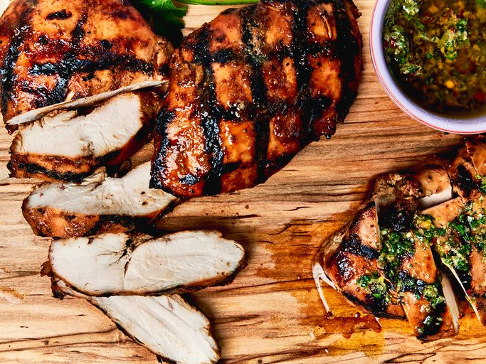

Grilled Chicken Breast

The best grilled chicken breasts you'll ever make begin with a basic marinade and end with the best technique for perfect cooking, complete with beautifully-executed grill marks.
You'll find a detailed ingredient list and step-by-step instructions in the recipe below, but let's go over the basics:
The perfect marinade consists of five elements, according recipe developer and senior producer Nicole McLaughlin: something salty, something sweet, an acid, a fat, and aromatics. Here’s what you’ll need for this perfect chicken marinade:
- Olive oil: Our perfect marinade starts with olive oil, which is essential for locking in moisture.
- Dijon: Dijon mustard adds complex, sharp, pleasantly tangy flavor.
- Honey: Honey lends subtle sweetness.
- Soy sauce: Soy sauce adds umami-rich saltiness.
- Lemon juice: Lemon juice brightens things up a bit.
- Garlic: Of course, fresh garlic is necessary for the most flavorful marinade.
- Ground spices: Onion powder and ground ginger take the flavor up a notch.
Ingredients
- 6 (6 ounce) skinless, boneless chicken breasts
- 1/4 cup olive oil
- 3 tablespoons Dijon mustard
- 3 tablespoons honey
- 2 tablespoons soy sauce
- 2 tablespoons lemon juice
- 3 cloves garlic, finely minced
- 1 1/2 teaspoons onion powder
- 1/2 teaspoon ground ginger
- oil or cooking spray
- 2 teaspoons kosher salt
How to Cook Chicken Breasts On the Grill
Here's a very brief overview of what you can expect when you grill chicken at home:
- Trim any excess fat from chicken. Place a piece of plastic or parchment on top of each
chicken breast on a solid, level surface, and pound the thick end of chicken to flatten to
an even thickness.
- Place chicken in a large resealable plastic bag. Add olive oil, Dijon, honey, soy sauce,
lemon juice, garlic, onion powder, and ginger to the bag. Press any excess air out of the bag
and seal the bag tightly. Massage chicken around in the bag until marinade is fully incorporated and chicken is well coated. Refrigerate for at least 4 hours or overnight, turning the bag occasionally.
- Preheat an outdoor grill for high heat, about 400 degrees F (200 degrees C).
Brush the grill grates with oil or coat with cooking spray.
- Place chicken, top side down, on the grill. Sprinkle evenly with salt. Cook, undisturbed,
until chicken easily releases from the grill and has dark brown grill marks, about 3 minutes. Reduce heat to 350 degrees F (175 degrees C) or medium heat, then flip and cook an additional 5 to 7 minutes or until chicken has reached an internal temperature of 165 degrees F (73 degrees C).
- Remove from heat and let stand 5 to 10 minutes before serving.
Back to Recipes